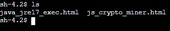
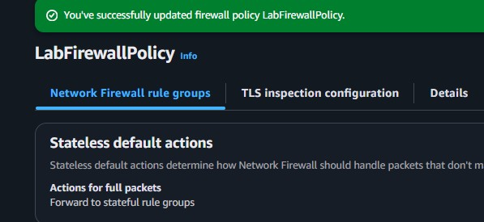
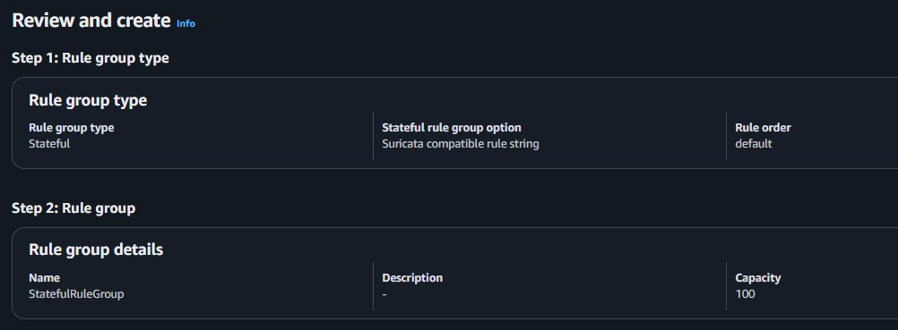
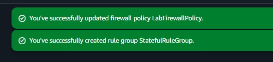
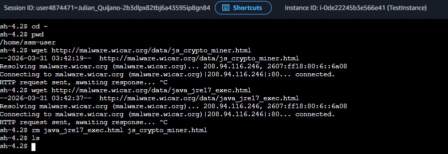

Firewall Configuration
Updated default stateless actions on the active firewall policy to specifically forward network packets to a stateful firewall rule group for deeper contextual inspection.
This lab focuses on hardening a network perimeter against malware threats. Specifically, the lab involves updating AWS Network Firewall policies with stateful rule groups that actively block attempts to access URLs known for hosting malicious actor files.
Demonstrated risk remediation by modifying the initial AWS Network Firewall configuration. Successfully established Stateful Rule Groups employing Suricata IPS criteria, effectively severing network connections targeting known malicious endpoints.
Updated default stateless actions on the active firewall policy to specifically forward network packets to a stateful firewall rule group for deeper contextual inspection.
Defined and engaged Suricata compatible rule strings parsing HTTP request streams, rejecting payloads originating from dangerous Uniform Resource Identifiers (URIs).
Detailed documentation of generating testing criteria and refining the firewall structure.
wget commands pointing at malware payload directories spanning external testing endpoints (e.g., wicar.org).

js_crypto_miner.html and java_jre17_exec.html).

wget transfers mirroring the initial baseline testing sequence.HTTP request sent, awaiting response... loops, validating that outgoing request packets were immediately trapped, filtered, and discarded at the boundary before initiating active connections.rm deletion command.
Quick reference of the Linux CLI commands executed in the terminal.
wgetA non-interactive network downloader used to fetch files from remote sources over HTTP, HTTPS, or FTP.
wget <url> : Downloads the specified URL file into the current working directory.rmRemoves files or directories residing on the file system.
rm <file1> <file2> : Completely deletes multiple file references dynamically spanning parameters.This lab highlighted how comprehensive security perimeters require multi-layered approaches. An unhardened firewall blindly permits malicious traffic inherently by defaulting behaviors to straightforward stateless rulesets primarily optimized for speed and connection validity over contextual threat inspection.
Expanding the capabilities of AWS Network Firewall natively through powerful IPS standards like Suricata allows organizations to explicitly identify, dissect, and intercept advanced adversarial traffic originating externally or laterally dynamically based completely upon specific threat payloads.